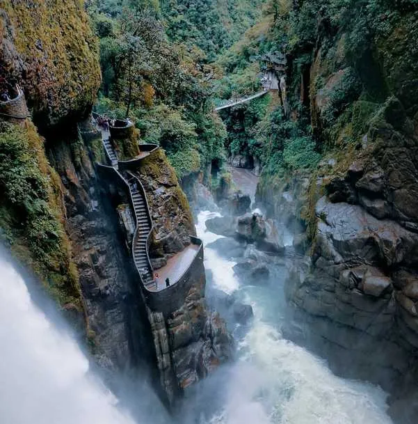
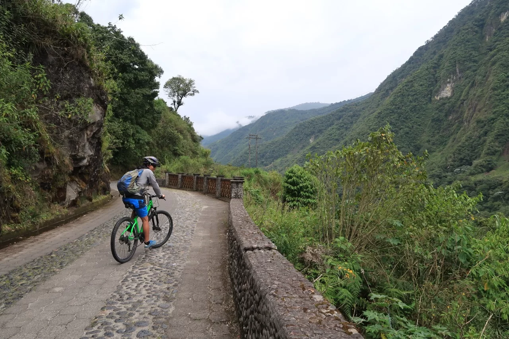

| Inicio | Galeria | Ubicacion Geografica | Costumbres |
|---|
El Pailón del Diablo
Es una de las cascadas más impresionantes del Ecuador. Tiene senderos, puentes colgantes
y miradores desde donde puedes sentir la fuerza del agua muy de cerca.

La Casa del Árbol
Famosa por su columpio llamado “El Fin del Mundo”, que se balancea
sobre un abismo con vista al volcán Tungurahua. Es ideal para fotos panorámicas.
La Ruta de las Cascadas
Un recorrido en bicicleta o chiva que pasa por varias cascadas como
El Manto de la Novia, Agoyán, y San Jorge, a lo largo del río Pastaza.
